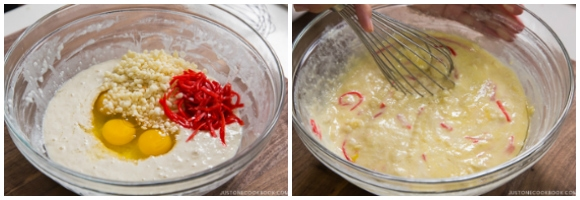
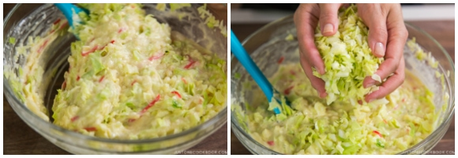
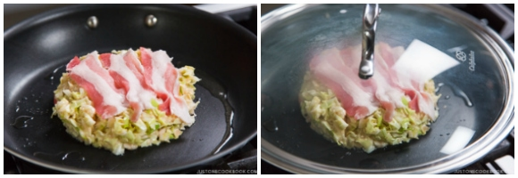
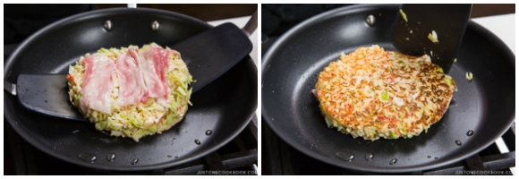
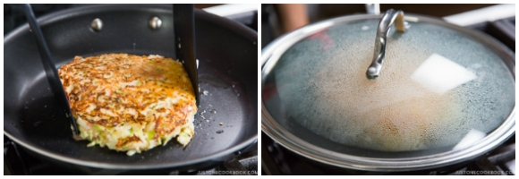
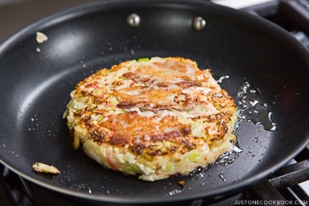

After one hour, take out the batter from the refrigerator. Add 4 large eggs (50 g each w/o
shell), ½ cup tenkasu/agedama (tempura scraps), and ¼ cup pickled red ginger (beni
shoga or kizami beni shoga) to the bowl. Mix until combined.
Add the minced cabbage to the batter, one-third of it at a time. Mix well before adding the
rest.
Prepare a large griddle or two large frying pans with lids to cook two savory pancakes at a
time. In the pans, heat a bit of neutral oil on medium heat. When it‘s hot (400ºF or 200ºC),
spread 1 portion of the batter, about 6 inches (15 cm) in diameter, in a circle in each pan. We
like thicker okonomiyaki (the final thickness is ¾ inches or 2 cm). If you’re new to making
okonomiyaki, make it smaller and thinner so it’s easier to flip.

Place 3 slices of pork belly on top of each okonomiyaki and cook covered on medium-low
heat for 5 minutes.
When the bottom side is nicely browned, flip them over.
another 5 minutes.
okonomiyaki to a plate. Continue cooking the rest of the okonomiyaki.
